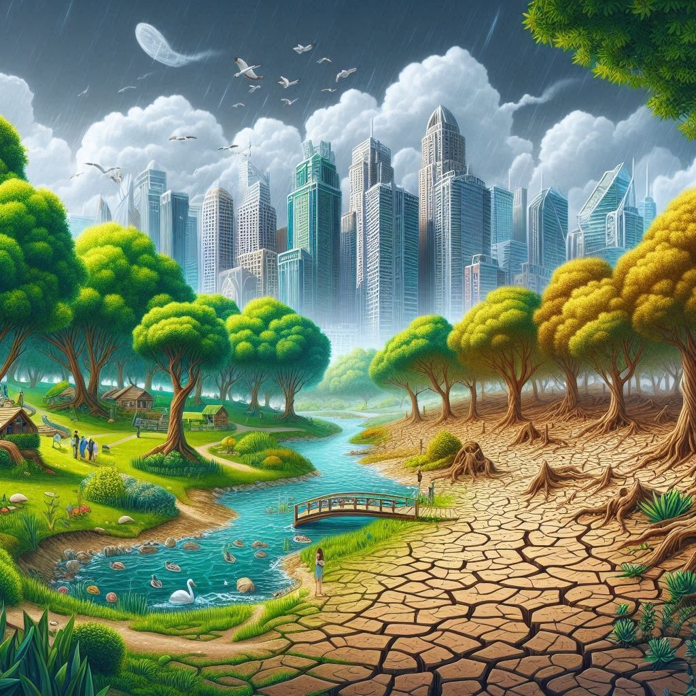

¿Qué es el cambio climático?
El cambio climático se refiere a las modificaciones prolongadas en las temperaturas y los patrones del clima. Aunque puede ser causado por fenómenos naturales como las variaciones en la actividad solar o grandes erupciones volcánicas, desde el siglo XIX las actividades humanas han sido el factor principal que lo impulsa. Esto se debe sobre todo a la quema de combustibles fósiles como el carbón, el petróleo y el gas.
Al quemar estos combustibles, se liberan gases de efecto invernadero, como el dióxido de carbono (CO2) y el metano, que atrapan el calor en la atmósfera y provocan un aumento de las temperaturas. Estas emisiones provienen, entre otras cosas, del uso de gasolina para los automóviles o del carbón para calefacción, así como de la deforestación y la agricultura. Sectores como la energía, la industria, el transporte, la construcción y el uso del suelo son los mayores responsables de estas emisiones.

La evidencia del calentamiento global impulsado por el ser humano
Los científicos del clima han demostrado que la actividad humana es la principal causa del calentamiento global en los últimos 200 años. Nuestras acciones, como la quema de combustibles fósiles, han generado gases de efecto invernadero que han acelerado el aumento de las temperaturas a un ritmo sin precedentes en los últimos 2000 años.
Actualmente, la temperatura promedio del planeta es 1,1 °C más alta que a finales del siglo XIX, antes de la Revolución Industrial, y es más elevada que en los últimos 100,000 años. La década de 2011-2020 fue la más calurosa registrada, y cada una de las últimas cuatro décadas ha superado a las anteriores en calor desde 1850.
Aunque muchos asocian el cambio climático con temperaturas más altas, esto es solo el comienzo. Debido a que la Tierra es un sistema interconectado, los cambios en un lugar pueden afectar a todo el planeta. Las consecuencias incluyen sequías severas, falta de agua, incendios forestales, aumento del nivel del mar, inundaciones, derretimiento de los polos, tormentas destructivas y pérdida de biodiversidad.
Impactos del cambio climático en la salud, seguridad y desplazamiento
El cambio climático tiene el potencial de afectar nuestra salud, la capacidad de producir alimentos, nuestras viviendas, la seguridad y el trabajo. Algunas personas ya son más vulnerables a estos impactos, especialmente en pequeñas islas y países en desarrollo. El aumento del nivel del mar y la intrusión de agua salada han forzado a comunidades a desplazarse, mientras que las sequías prolongadas están aumentando el riesgo de hambruna. En el futuro, se espera un incremento en el número de refugiados climáticos, personas que se ven obligadas a abandonar sus hogares debido a las consecuencias del cambio climático.
El costo de la inacción climática y la necesidad de financiamiento global
La acción contra el cambio climático requiere grandes inversiones por parte de los gobiernos y empresas, pero no actuar resulta mucho más costoso. Un paso clave es que los países industrializados cumplan con su compromiso de proporcionar 100.000 millones de dólares anuales a los países en desarrollo, para ayudarles a adaptarse al cambio climático y avanzar hacia economías más sostenibles y ecológicas.